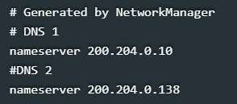

◉ Configuração de rede linux via terminal
Digite o comando nano /etc/network/interfaces
Irá abrir um arquivo de configurações como na imagem, basta apagá-lo e digitá-lo conforme sua necessidade ficando assim
Deste modo a primeira placa de rede vai receber o endereço Ip via Servidor DHCP e a segunda vai ficar com Ip estático.
Caso queira colocar Ip estático nas duas placas de rede basta deixá-lo assim:
auto eth0 - serve para dizer que quando reiniciarmos a rede com o comando /etc/init.d/networking restart,
essa interface também será reiniciada.
allow-hotplug - reinicia a rede quando o cabo Lan for conectado.
iface eth0 inet static - diz que a placa de rede terá um endereço Ip estático.
iface eth0 inet dhcp - diz que a placa de rede receberá um endereço Ip via servidor DHCP.
Lembrando que eth0 é a primeira placa de rede com fio, eth1 a segunda placa de rede com fio e wlan0 a primeira placa
wireless caso tenha alguma instalada.
O arquivo abaixo é ditado automaticamente caso você receba o endereço do servidor DNS por DHCP. Para configurar o nosso
servidor DNS edite o seguinte arquivo com o comado:
nano /etc/resolv.conf
Ficando o arquivo desta forma:

O arquivo /etc/network/interfaces diz as configurações gerais de cada interface de rede. Já o arquivo /etc/resolv.conf,
diz qual será o nosso servidor DNS. Após editar o arquivo com as suas configurações, salve-o e depois feche. No Terminal
reinicie as placas de rede para que as novas configurações entrem em vigor usando o comando:
/etc/init.d/networking restart
Para conferir digite: ifconfig
Verifique no terminal se as configurações estão realmente corretas.
Quando você troca uma placa de rede o Linux poderá automaticamente renomeá-la para (ethX),
fazendo com que sua conexão continue sem funcionar, isso acontece porque o Linux identifica a placa
de rede pelo seu endereço MAC (que é único). Para alterar o nome da placa de rede basta alterar o seguinte arquivo com o comando:
nano /etc/udev/rules.d/70-persistent-net.rules
No comando acima onde está o número 70 pode mudar conforme a distribuição Linux. O seguinte arquivo será aberto, bastando ir em NAME
e alterar o nome da placa e em seguida salvar.